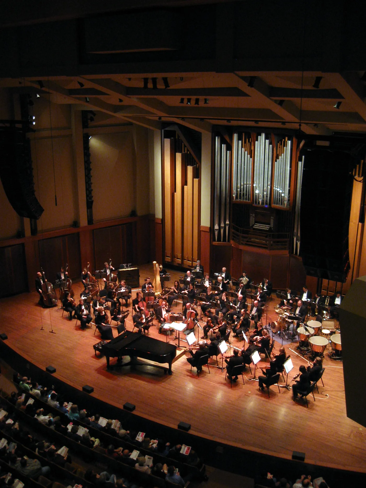
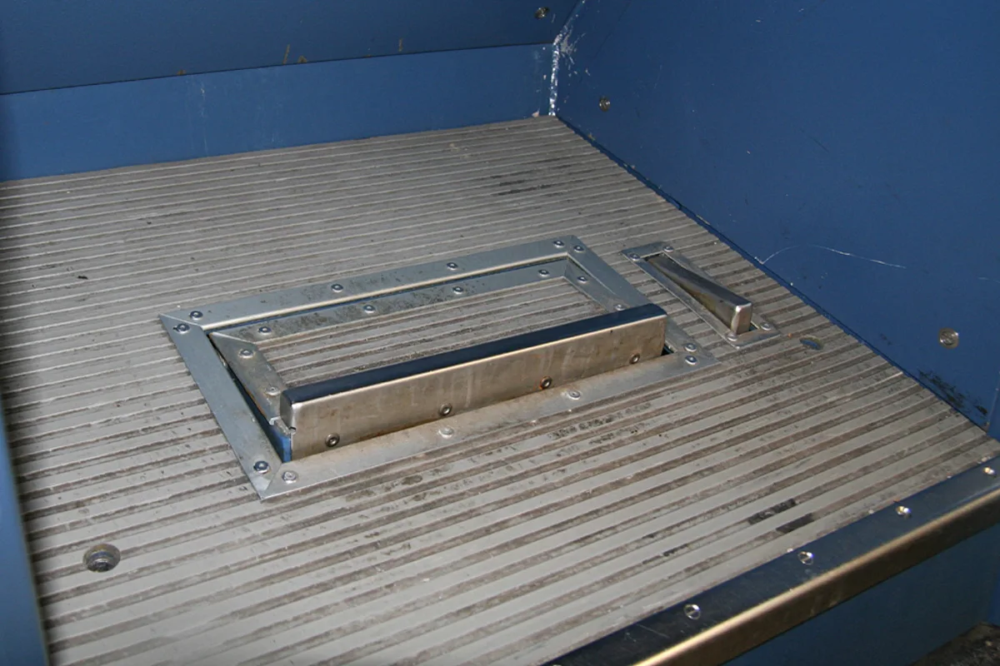

Sound travels about a foot per millisecond. Two musicians standing ten feet apart on a stage are already playing ten milliseconds in each other's past, and an orchestra spans several times that. Ensembles absorb this without noticing, up to a point: somewhere around 30 ms the delay stops being room acoustics and starts being lag, and by 70 ms you're not playing together anymore, you're taking turns. That's the whole engineering problem of playing music over the internet. A video call runs 150 to 300 ms mouth to ear and nobody minds, because conversation is turn-taking. Music is not.
JamStream is a desktop app for jamming over the internet at latencies you can actually play on. One musician hosts: the app launches a session server on their own computer or in their own cloud account, mints one invite link per seat, and everyone else pastes theirs. Up to ten musicians play, up to twenty listeners tune in, the session can stream live to Twitch and YouTube and record takes into the host's own bucket, and when the music stops the server deletes itself. There are no accounts and no servers of mine in the middle: your identity is your invite, and the only infrastructure is the machine your session rents for an evening.

{kind=link}
The latency budget
The target is under 30 ms mouth to ear, and the budget is spent in five places: the sound card (a 2.5, 5, or 10 ms device buffer each way, with WASAPI exclusive mode on Windows buying back the 20 to 30 ms that shared mode costs), sample rate conversion when a device won't run at 48 kHz (about 3 ms per converted direction), the network twice (your uplink, everyone's downlink), the jitter buffers on both ends (2.5 to 60 ms receive-side, adaptive), and the playout cushion the client holds ahead of the card. The headline figure is summed from all of them, from sound entering the interface to the last buffer handed to the sound card, which is as far as a measurement from inside the app can see. Measured medians with real Opus and real encryption over a simulated network: 14.7 ms over a 1 ms round trip to the server, 24.3 ms at a same-region 12 ms round trip, 69.8 ms coast to coast over 45 ms of DSL. Under about 30 ms it feels like standing on a stage together. At 70 ms it feels like a phone call. Those numbers aren't marketing copy, they're CI gates; more on that below.
A server that mixes
The session server runs a mix tick every 2.5 ms: 120 samples at 48 kHz. Each tick it decodes every musician's uplink, builds one personal stereo mix per musician with that musician excluded by default (you monitor yourself locally through your own hardware, because at low latency a mix that includes your own signal late is unplayable), applies that member's fader and constant-power pan settings, and encodes the result back down at 192 kbps. Listeners get a different path: a broadcast mix accumulated over eight ticks into 20 ms frames, run through a brickwall lookahead limiter (1 ms lookahead, -1 dBFS ceiling), and encoded once at 128 kbps, then sealed separately for each listener. Only the sequence number and the encryption seal differ per listener. Encoding it per listener was measured at 20 × 190 µs inside a 2500 µs tick, which is arithmetic that doesn't work; encoding it once brings the worst tick at full capacity to about a quarter of the deadline.
The self-exclusion has an escape hatch, because the right answer inverts with distance. At low latency you play against your own direct sound and the mix fills in the band; past about 30 ms that splits you across two timelines, your hands on one, the band on another. So the Audio tab offers Hear yourself through the server: your own sound joins the mix delayed like everyone else's, and the gap you hear becomes the difference between two uplinks instead of the whole network path. Off by default, needs headphones, offered only when the latency says it would help.
The metronome is mixed sample-accurately on the server, and deliberately left out of the listener mix. The host can flip their own monitor over to the broadcast mix to audition what the stream hears, still on musician-grade 2.5 ms frames.
The wire
The protocol is custom, over a single UDP socket, not QUIC and not WebRTC. The handshake is Noise IK with X25519, ChaCha20-Poly1305, and BLAKE2s. The IK pattern matters: your invite carries the server's static public key, so the server is authenticated on the very first packet with no certificates and no trust-on-first-use, and your identity is an Ed25519-signed seat token minted on the host's machine before the server even exists. An invite is about 220 characters, admits exactly one person, and can be revoked mid-session.
Media frames get a hand-packed 14-byte header rather than a serialization library, because the hot path's layout is part of the protocol. When packet loss crosses 1%, each packet starts piggybacking the previous frame's payload, so any single loss is recovered from its successor; redundancy turns off only after ten consecutive loss reports below 0.2%, so a flapping link doesn't toggle doubled bandwidth every second. The loss figure comes from the server's view of your uplink, reported once a second, and it counts wire loss even when redundancy already papered over it.

{kind=link}
Opus has a quirk here: frames under 10 ms force the CELT code path, and Opus's in-band forward error correction only exists in the SILK path. So the 2.5 ms musician frames rely entirely on the piggyback scheme, while the 10 and 20 ms listener frames get in-band FEC as well. Two loss-protection mechanisms in one system, selected by which codec internals the frame duration happens to force. Chat, rosters, avatars, and stream control ride a small reliable channel over the same socket, with cumulative acks plus a 32-bit selective-ack bitmap, and replay protection is WireGuard's sliding-window scheme.
The handshake path is also where the denial-of-service math lives, because reading a handshake init costs an X25519 operation on the same task that owes everyone 2.5 ms of audio every 2.5 ms. Above 24 inits per second the server switches to WireGuard-style stateless cookies, deliberately below the 32-per-second Diffie-Hellman budget so cookies engage before honest joins start being dropped. And there are amplification floors: a version reject is 21 bytes, so any init shorter than 48 bytes gets silence, because answering a 3-byte datagram with 21 bytes would make the server an amplifier.
The jitter buffer's blind spot
The jitter buffer is mostly textbook: RFC 3550 interarrival jitter smoothed with a 1/16 EWMA, target depth of three times that plus one, clamped between 1 and 24 frames. It grows by holding a tick and shrinks by dropping a frame after 16 consecutive over-target ticks, and it only shrinks above target plus one, because the piggybacked redundancy is only usable when a lost packet's successor has already arrived; a buffer that shrank to exactly its target would silently disable its own loss protection.
The interesting part is a failure mode between the ordinary recovery paths. If a packet arrives one frame behind the playout position and that pull was concealed, playout steps back a frame and stretches time by one tick. If arrivals jump 512 frames, that reads as a stream restart and the buffer resets. But between those two lies a hole: a persistent offset of 2 to 511 frames where every packet is slightly late, every pull conceals, and both escape hatches are out of reach, forever. The signature is precise (a concealed pull with nothing playable, on a tick that also dropped a late packet), and if it persists for 60 ticks the buffer abandons its playout position and re-anchors. The 60 is derived at both ends: the largest transient that heals itself (a full 24-frame buffer plus a hostile-wifi reorder spike) resolves within about 32 ticks, so 60 gives 2x margin against false positives, while 60 ticks of detection plus a worst-case refill is about 210 ms, inside the 250 ms audio-continuity gate the test suite enforces. There are negative controls: 5,000 ticks of 2% loss with deep reordering must never trip it.
Nobody's clock is right
Two sound cards both claiming 48 kHz differ by up to a couple hundred parts per million, which sounds negligible until you realize 200 ppm is 17 spurious frames per minute that have to go somewhere. Each direction runs a drift compensator: a resampler whose ratio is steered a few ppm at a time by a PI controller watching buffer depth, with ±500 ppm of authority and a slew limit of 1 ppm per frame. The subtle bit is the setpoint: it isn't fixed, it tracks a slow moving average of the depth itself, floored at target plus one. The controller's job is to null the rate mismatch, not to fight a jitter buffer whose own adaptive target just moved for its own reasons. The capture-side loop is steered from the server's once-a-second report of your uplink depth; the playout loop from the local buffer. A property test asserts zero heap allocations across 5,000 steering cycles, because this all runs adjacent to the audio callback.
Before any of that, the device has to get to 48 kHz at all, and how much you can trust a device is per-OS. The policy is a four-rung ladder: run natively at 48 kHz; set the device's clock to 48 kHz where the OS allows it (CoreAudio, disclosed to the user since it's visible to every other app); let the OS convert (WASAPI, PipeWire); or convert at the boundary and count the ~3.2 ms into the latency figure. The rung you can trust depends on whether the host API tells the truth: ALSA sets the nearest rate the hardware supports and never reads it back, so a 44.1 kHz card asked for 48 comes back looking successful and plays the whole session sharp and 8.8% fast. So ALSA (and any unrecognized host) is assumed lying and gets the converter. The one flat refusal: a Bluetooth headset microphone in hands-free mode is an 8 or 16 kHz telephony endpoint, and no resampler un-telephones it. The error says to use another microphone.
Picking a region

Hosting in the cloud starts with a probe: the app sends UDP round trips to every candidate region and ranks them by the worst member's RTT, because the band is only as tight as its most delayed member. RTTs are bucketed into 5 ms steps with price breaking ties inside a bucket, so a 2 ms latency edge never beats a materially cheaper region. Anyone whose best RTT to anywhere exceeds 150 ms is on satellite or worse and gets excluded from the ranking, so one bandmate on a boat can't veto the region for everyone else. Supported providers: DigitalOcean, AWS, GCP, or just your own computer; local hosting is the default and costs nothing.
The server deletes itself

{kind=link}
A rented server that outlives the jam is a subscription you didn't sign up for, so teardown is a dead man's switch that lives in the guest, not on your laptop. While musicians are connected, the server touches an activity file once a second; a systemd timer compares that file's age against the idle window (default 10 minutes) and the session's hard cap (default 12 hours). The guard measures both windows in /proc/uptime seconds and only ever compares the file's timestamp for equality, never subtraction, because a cloud VM routinely boots with a wrong hardware clock and takes a large NTP step a minute later; a wall-clock idle window would read that step as ten minutes of silence and destroy a server with musicians playing on it. An in-flight recording upload defers destruction, but never past 600 seconds: a VM that never dies costs more than a lost recording.
What "destroy" means is different on every provider, shaped by what each one can actually guarantee. On AWS, instances launch with shutdown behavior set to terminate, so the guard runs shutdown -h now and the box holds no credentials at all. On DigitalOcean, powered-off droplets still bill, so the droplet deletes itself through the API with a token scoped to that one droplet. On GCP, the instance carries no service account, so nothing on it can delete it; instead the launch sets a maximum run duration with a termination action of delete, and the guard is careful never to power the VM off, because Compute Engine clears the pending termination when an instance stops, and a powered-off instance would outlive its own cap and bill its disk forever. As a backstop, every launch of the app or CLI sweeps all configured providers for tagged machines that shouldn't exist.

The result is that a session is a line item, not a bill: three hours of a four-piece costs about $0.08, and the absolute worst case, every guardrail ignored for the full 12-hour cap, is around forty cents. The status bar shows the meter running during the session.
One encode, every platform

Streaming runs entirely on the session server: frames are rendered in-process (member cards, avatars, level meters, a pure function of the roster and the frame index), encoded once by ffmpeg (720p30, x264 zerolatency, CBR 2500k, AAC 128k), published to a MediaMTX relay on localhost, and then pushed to each destination by its own ffmpeg -c copy process with its own restart backoff. One process per destination instead of ffmpeg's tee muxer means Twitch falling over restarts one pusher while YouTube never drops a frame.
Audio is the master clock. At 30 fps a video frame is 1600 samples, which is 13⅓ mix ticks, so there is no whole number of ticks per frame and any implementation that picks one drifts unboundedly (16 ticks per frame is exactly 25 fps wearing a 30 fps label). Instead the frame count due is a pure function of cumulative samples consumed, producing a repeating 13, 13, 14 tick pattern that lands exactly 3 frames every 100 ms. When the renderer falls behind, catch-up frames repeat the last picture rather than being skipped, because the frame count is what keeps video pinned to audio; repeats and drops are reported separately since one is a stutter and the other is loss.
Feeding ffmpeg two raw streams through pipes hides a structural deadlock: ffmpeg demuxes all inputs on one thread and reads whichever is behind, a raw 720p frame is 1,382,400 bytes, and a pipe holds 65,536 bytes on Linux but as little as 16,384 on macOS, so the same frame is 21 pipe-fulls on one machine and 84 on the next, which is exactly why the bug survives testing on one platform. A single thread feeding both pipes eventually waits on a pipe ffmpeg isn't reading. The fix is one writer thread per pipe with bounded queues, so no thread ever waits on two things: the video queue drops frames on overflow, and the audio queue never drops (a hole in the master clock is worse than a restart) and is bounded by a stall detector instead. Stream keys, meanwhile, never touch a command line: each key is written to a file created 0600, unlinked before the child even returns from spawn, and read by the pusher into an environment variable, with every URL in ffmpeg's stderr redacted before it can reach a log.
Takes

Recording writes 16-bit 48 kHz FLAC, the full mix and optionally one stem per musician, streamed during the session rather than assembled at the end: the FLAC header is written with the total sample count marked unknown, so multipart upload to the host's own S3, Spaces, or GCS bucket can run while the take is still being played. Retention is enforced as an actual bucket lifecycle rule, not an app-side promise, and the Takes screen prices each download's egress on the button. Each Record-to-Stop is one take.
Testing on a fake internet
The server and client cores are sans-io: they take a timestamp and datagrams in, and give datagrams and events out. The same code runs under the production server binary, the desktop app, and a deterministic simulation harness that drives a real server and up to thirty real clients, with real Opus and real Noise encryption, in one process on a hand-advanced virtual clock, through a seeded network simulator with per-link delay, jitter, loss, reordering, and duplication. Same seed, same bytes, every time. Networked bugs that would surface once a month on stage replay in milliseconds on a laptop.
That's where the latency table comes from, and each of those numbers is a CI gate: 16 ms for same-city fiber, 30 ms regional (the product promise), 72 ms for cross-country DSL, each with a lower bound too, since a measurement below the physical floor means the measurement is broken. A hostile-wifi scenario requires redundancy to close at least 75% of loss-induced gaps per member (measured 90 to 93%), per member rather than summed because summed, one healthy member covers for two broken ones. Clock drift is deliberately not a network parameter but a read-side remap of the virtual clock, so a 200 ppm skew composes with any network profile. The 2.5 ms tick budget is gated at p99 rather than the mean, because the deadline is per tick and a mean divides the expensive tick into the seven cheap ones; the timed gates run on their own CI runner after an experiment showed that contention barely moves the median but moves the p99 seventeen-fold. Hot paths (drift compensation, resampling, frame rendering) are asserted allocation-free with a counting allocator, and the protocol surface has eight fuzz targets, including the Opus decoder, since it parses network bytes on a publicly reachable machine.
Implementation
JamStream is a Rust workspace of eleven crates: the wire protocol, the DSP engine, the sans-io session cores, the server binary, the egui desktop app, the audio device layer (cpal on macOS and Linux, native exclusive-mode WASAPI on Windows), cloud provisioning with hand-rolled request signing for all three providers, the streaming pipeline, the frame renderer, a CLI that shares session state with the app, and the harness. The app ships signed and notarized for macOS and as plain binaries for Windows and Linux, with the session server as a static musl build that cloud-init downloads and checksum-verifies at boot. It's in beta; downloads and the full guide are at sean-reid.github.io/jamstream.